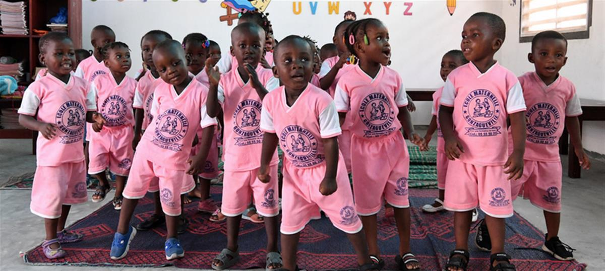

UNICEF/Frank Dejo - Students are happy a new class is being built at their school in Sakassou, in the center of Côte d'Ivoire. (6 February 2019)
29 July 2019
In an innovative partnership, the United Nations Children’s Fund (UNICEF) and a Colombian social enterprise announced on Monday that it had broken ground on a first-of-its-kind factory to convert plastic waste in Côte d'Ivoire into modular, easy-to-assemble, low-cost plastic bricks for classrooms in the West African country.
“This factory will be at the cutting edge of smart, scalable solutions for some of the major education challenges that Africa’s children and communities face,” said UNICEF Executive Director Henrietta Fore. “Its potential is threefold: more classrooms for children in Côte d’Ivoire, reduced plastic waste in the environment, and additional income avenues for the most vulnerable families.”
Côte d'Ivoire needs 15,000 classrooms to provide children with a place to learn.
Partnering with plastic and rubber waste recylcing company Conceptos Plasticos, UNICEF is using recycled plastic collected from polluted areas in and around Abidjan to build 500 classrooms for more than 25,000 children over the next two years, with the potential to increase production beyond.
“One of the major challenges facing Ivorian school children is a lack of classrooms,” said UNICEF Representative Aboubacar Kampo, who has championed the project from its inception.
Classrooms either don’t exist or are overcrowded, making learning a challenging and unpleasant experience.
“In certain areas, for the first-time, kindergartners from poor neighborhoods would be able to attend classrooms with less than 100 other students”, he elaborated. “Children who never thought there would be a place for them at school will be able to learn and thrive in a new and clean classroom.”
While more than 280 tons of plastic waste are produced every day in Abidjan alone, only about five per cent is recycled. The rest ends up mostly in low-income communities’ landfill sites in.
Plastic waste pollution exacerbates existing hygiene and sanitation challenges
And improper waste management is responsible for 60 per cent of malaria, diarrhea and pneumonia cases in children – diseases that are among the leading causes of death for Ivorian children.
The bricks will be made from 100 per cent plastic and are fire resistant. They are 40 per cent cheaper, 20 per cent lighter and will last hundreds of years longer than conventional building materials. They are also waterproof, well insulated and designed to resist heavy wind.
When fully operational, the factory will:
- Become a formalized recycling market.
- Recycle 9,600 tons of plastic waste a year.
- Provide a source of income to women living in poverty in.
“Sometimes, embedded deep within our most pressing challenges are promising opportunities,” said Ms. Fore.
To date, nine classrooms have been built in Gonzagueville, Divo and Toumodi using plastic bricks made in Colombia, demonstrating the viability of the construction methods and materials.
“By turning plastic pollution into an opportunity, we want to help lift women out of poverty and leave a better world for children”, said Isabel Cristina Gamez, Co-Founder and CEO of Conceptos Plasticos.
Alongside investment to build in Côte d’Ivoire, plans are also under way to scale this project to other countries in the region, and potentially beyond. West and central Africa accounts for one-third of the world’s primary school age children and one-fifth of lower secondary age children who are out of school.
“This project is more than just a waste management and education infrastructure project; it is a functioning metaphor—the growing challenge of plastic waste turned into literal building blocks for a future generation of children”, concluded the UNICEF chief.

© UNICEF/UN0309347/Frank Dejo: Children and teachers in preschool are very happy with their new classes in Gonzagueville, a suburban of Abidjan, the capital of Côte d'Ivoire.
SOURCE: UN NEWS